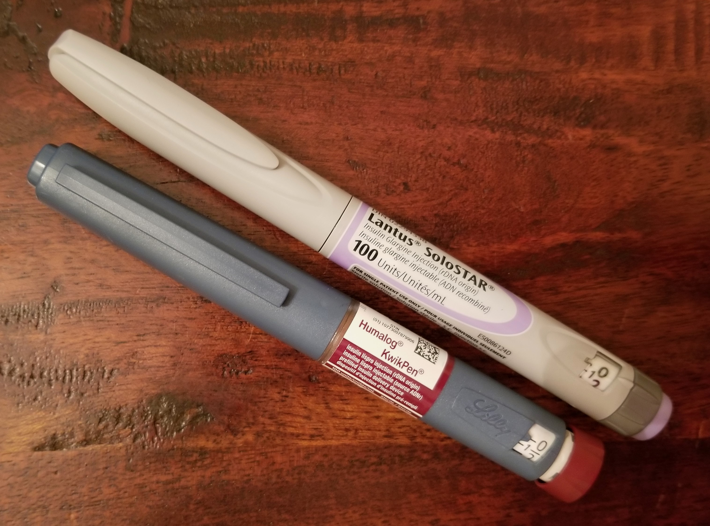
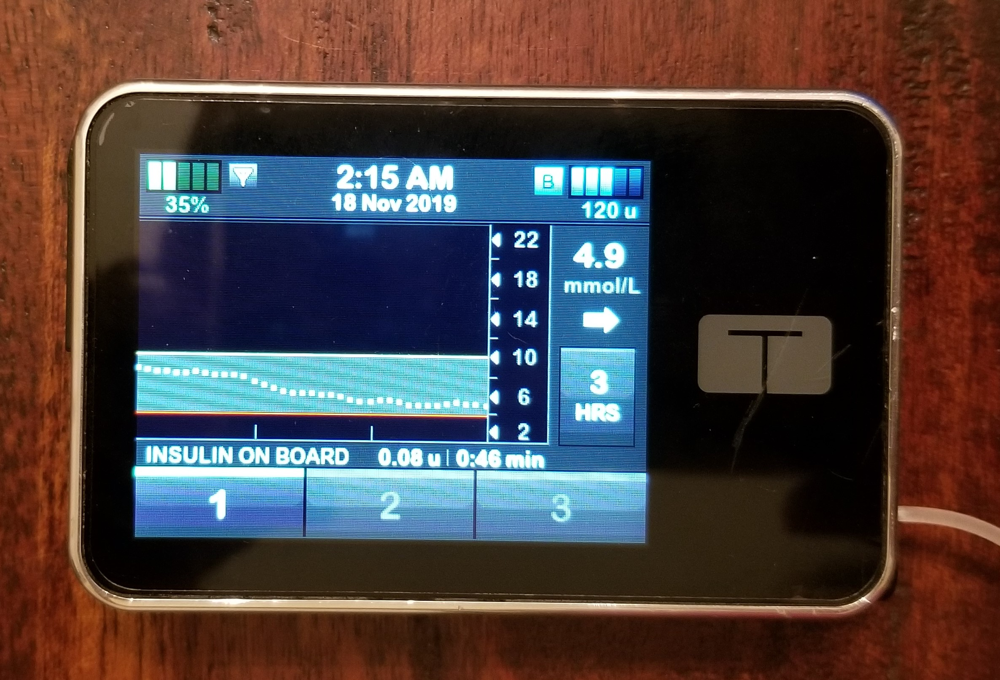

Respect the additional challenges, particularly around medications and devices, and
responsibilities a person with type 1 diabetes experiences.
Determine an appropriate balance between desiring to help,
protect, or advise and respecting the person's autonomy to make
their own decisions.
Help in ways that will be appreciated.
Does a person with type 1 diabetes REALLY need to take insulin?
Yes, insulin is the only required treatment for
type 1 diabetes. If a person with type 1 diabetes has other health
concerns, they may take other medications (e.g., Metformin for
insulin resistance; statins to prevent cardiovascular disease), but
these may not be necessary. Insulin is required.
A note about insulin
In a person without diabetes, the pancreas sends insulin directly
into the portal vein. This vein takes it straight to the liver to be used
as needed. Those with type 1 diabetes inject insulin into fat
tissue. The insulin is then absorbed into the blood circulating
throughout the body, eventually reaching the liver.
Human insulin, even though it is identical to what the human pancreas produces, acts quite differently when it is injected.
Instead of acting immediately, it takes about 4 hours to fully peak. This isn't ideal for people who
don't follow a strict eating schedule (see more about eating in the
section on Food).
To address this timing issue, various insulins have been developed.
These insulins are called insulin analogs or synthetic insulin. Some
work rapidly, while others are slow and steady. 2
Length of time for insulin to start acting in the bloodstream.
The goal for insulin injected to cover meals is to peak at the same time as glucose from digested food hits the person's bloodstream.
This means that the timing of the insulin injection is extremely
important.
One obstacle to timing injections is if others around the person express discomfort with needles and injections done in public.
Cara
"The last time I went out with my aunt to eat, she got upset when I was about to give myself a dose of insulin 'in front of everyone' and asked why I 'didn't do it in the bathroom.'"
How is insulin used?
A person with type 1 diabetes typically uses insulin in two
different ways:
Long-acting or
basal insulin makes sure that a little insulin is
always present in the person's bloodstream. This insulin allows
the person's brain cells, for example, to use glucose to function
even while the person is sleeping.
rapid-acting insulin is used to absorb the
glucose created by the digestion of food.
picture of both insulins used together in a day
Devices used to deliver insulin
A person on multiple daily injections (MDI) uses syringes or insulin
pens to inject insulin. They typically take an injection of
long-acting insulin once a day, and injections of rapid-acting
insulin every time they eat or when they need to lower a high blood
sugar.

Lantus (long-acting) and Humalog (rapid-acting) insulin pens
A person on an insulin pump typically only uses rapid-acting
insulin. The pump delivers the insulin through a plastic cannula
inserted into fat, typically on the stomach, back, arms, or legs. The basal insulin settings give a tiny amount of
insulin every five minutes. The bolus settings control how much
insulin is given for a meal or correction. The insulin pump does not
automatically determine how much insulin to give, it just
facilitates the delivery of the insulin.

Insulin pump with cgm data for the last 3 hours shown on the screen. Current sugar level is 4.9 mmol/L.
The tools a person uses to inject insulin depend on a number of
factors: what they are comfortable using, whether they have any fear
of injections, whether they mind having a device always attached to
their body, the cost of each option, etc.
Dangers of insulin
Insulin is a dangerous drug. Too much or too little can be fatal. A
person with type 1 diabetes may be very sensitive to insulin. A
woman with type 1 diabetes may take about 40 units of insulin a day,
about 7 units with each meal. In contrast, a woman with type 2
diabetes may take 150 units of insulin a day. When a health provider
assumes that a patient with diabetes has type 2 diabetes, they may
administer doses of 10 units or more at a time, which can be fatal
for an insulin-sensitive person with type 1 diabetes.
Insulin pumps can (and have) malfunctioned. People wearing them
should be aware of the possibility, what to look out for, and how to
quickly respond to avoid or deal with emergencies that result. (read
more about this in
High and Low Blood Sugars)
There is danger even with syringes/pens. Typically, a person takes
about 50% of their daily dose of insulin as basal and 50% as bolus.
If a person accidentally takes the rapid-acting insulin when they
meant to take the long-acting insulin, they need to have the
equivalent of a full day's worth of carbohydrates within the next
two hours.
Key Take-aways
People with type 1 diabetes must take insulin.
The timing of insulin injections can determine the person's
blood sugar levels for the next few hours. It is crucial that
the person feels free to take the insulin at the time they judge
best.
They take 2 types of insulin: long-acting or basal to cover what
the body needs to operate, and short-acting or bolus to cover
food that has been digested.
They may use syringes, insulin pens, or insulin pumps to deliver
insulin.
How often do blood sugar levels need to be checked?
Every person with type 1 diabetes should have a meter for testing
their blood sugar. Blood sugar levels should be tested frequently.
The person with type 1 diabetes and their diabetes health care team
will decide when and how often is best for the person to test.
Typically, it is recommended for a person with type 1 diabetes to
test at least 4 times a day: Before breakfast, lunch, supper, and
bedtime. They may also test more frequently when sick or exercising.
James
"Sometimes finding the right device makes all the difference.
After getting the Genteel finger pricker, I instantly went
from the minimum four blood glucose checks a day to checking
ten times a day. I hate, hate, hate needles and blood glucose
checks, but the Genteel made the anxiety go away."
In addition, Canadian law requires that a person taking insulin test
blood sugar levels before driving to avoid severe hypoglycemia while
operating a vehicle:3
Driving with Type 1 Diabetes
A person with type 1 diabetes must
stop driving immediately if they know or suspect they have low blood sugar
NOT drive when blood sugar is below 4.0 mmol/L
NOT drive when blood sugar is between 4.0 and
5.0 mmol/L until after eating or drinking something with carbohydrates
NOT drive until at least 45 minutes after effectively treating a low blood sugar between 2.5 and 4.0 mmol/L
on long drives, check blood sugar immediately before driving
and approximately every 4 hours while driving, and have food or drink containing carbohydrates in the vehicle with them.
If the person has experienced an extreme hypoglycemic event in the
six months or hypoglycemic unawareness in the past year, there are
some additional restrictions. The person must
check blood sugar immediately before driving and approximately
every hour while driving
NOT drive or stop driving if blood sugar falls below 6.0
mmol/L
Some people can feel when their blood sugar is low or high (see more
about these signs in
High and Low Blood Sugar). However, 40% of those with type 1 diabetes cannot tell whether
their blood sugar is in range. For these people in particular, it is
important to have additional tools to alert them to out-of-range
blood sugar levels.
Continuous Glucose Monitors (CGMs)
A CGM is a device a person wears that monitors the sugar level in the
person's interstitial fluid (the water around the fat cells). A
transmitter on the device sends these numbers to the person's cell
phone, insulin pump, or other receiver so the person can see their
blood sugar and whether it's trending up, down, or flat. It allows the
person to make real-time decisions about their activity, food, and
insulin needs.
Some CGMs can be set up so that current glucose levels or alerts are
shared with others through their smartphones.
CGMs aren't as accurate as blood glucose meter results for the
current blood glucose level. Insterstitial fluid readings tend to be
about 15 minutes behing blood glucose readings. This means the cgm
may not be able to catch rapid drops in blood sugar before a person
experiences a hypoglycemic emergency.
One of the benefits of CGMs is that they can work with insulin
pumps. The cgm can send current blood glucose levels to the insulin
pump, which responds by increasing or decreasing the amount of
insulin it delivers. This system can help those with type 1 diabetes
achieve better control while reducing the diabetes burden (see
Mental Health).
Felicia
"I was recently asked about my cgm, and after I explained, the person said, 'Oh, so you really don't like to take care of your diabetes or take your medicine, huh?' I literally had to walk away."
Diabetic Alert Dogs
Those with hypoglycemia unawareness or a thyroid disease like
Addison's that can cause extreme drops in blood glucose may use a
diabetic alert dog to help monitor their blood glucose levels. Dogs
can be trained to smell and alert when a person's blood sugar is too
low or too high. They can also be trained to support the person
experiencing extreme hypoglycemia by bringing them their blood sugar
meter and juice and alerting others.
The following video shows NHL player Max Domi and his diabetic alert
dog Orion. Max also speaks
about how often he tests his blood sugar before, during, and after a
game.
SportsCenterJSA. “Arizona's impact rookie Domi playing with diabetes
- SportsCenter (11-14-2015).” Online video clip. YouTube. November
14, 2015. Web.
Training a dog to pick up on blood sugar scents can often be done
fairly quickly. in fact, some dogs (and cats) are natural alerters.
However, for a dog to be considered a service dog, with full legal
privileges, it must also have public access training. This part of
the training is more time-consuming, and typically takes about 2
years.
Key Take-aways
A blood glucose meter is used to measure blood glucose levels.
Before driving, a person with type 1 diabetes should always
check blood glucose levels and make sure they are above 5.0
mmol/L.
CGMs provide real-time data and trends that can be analyzed.
They can make it easy to discreetly check blood sugar numbers
and they allow others to be notified of out-of-range blood
sugars.
Diabetic Alert Dogs can smell when a person's blood glucose is
out of range and can alert the person to take action
immediately.
When should ketones be checked?
In addition to monitoring blood glucose levels, those with type 1
diabetes must also monitor ketones. Ketones develop when there is
not enough insulin in a person's system, so the kidneys flush
glucose out through the urine.
When high levels of ketones are present, the person is in danger of
developing diabetic ketoacidosis, a life-threatening condition (see
more in
High and Low Blood Sugars).
The person can check for ketones using urine strips or a blood meter
similar to a blood glucose meter.
Key Take-aways
High levels of ketones can be a sign of a serious problem.
Ketone levels can be checked using urine strips or a ketone
blood meter.
Did you get all that?
Try a few questions
Personalize It
Talk to the person you know with type 1 diabetes.
Find out about the devices they use to manage their diabetes.
What devices do they use to inject/deliver insulin?
What tools do they use to monitor their blood sugar levels?
Have they ever considered using anything else? Why or why not?
Have they ever felt uncomfortable checking their blood sugar or
giving themselves insulin while out in public? How did they handle
it?
References
Quianzon, C. C., & Cheikh, I. (2012). History of insulin.
Journal of community hospital internal medicine perspectives,
2(2), 18701.
Canadian Council of Motor Transport Administrators. (2017,
March). Determining Driver Fitness in Canada. Retrieved from:
https://ccmta.ca/images/publications/pdf/NSC_2018/Standard_6_Medical-Standards-2017-English.pdf
Martín-Timón, I., & del Cañizo-Gómez, F. J. (2015). Mechanisms of hypoglycemia unawareness and implications in diabetic patients. World journal of diabetes, 6(7), 912.
{kind=link}